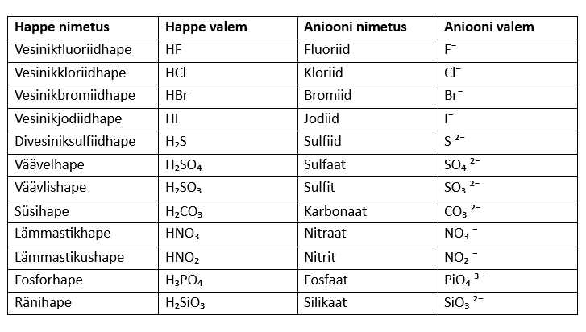

See peatükk käsitleb põhiteadmisi millest peab aru saama, et reaktsioonivõrrandeid osata.
⎯Tähtsad aineklassid ja kuidas neid ära tunda⎯
Lihtaine: Ainult ühe elemendi aatomid, näiteks väävli aatom S või hapniku molekul O₂.
Liitaine: Kahe või enama elementide aatomid, kõik keemilised ühendid.
Ioon: Aatom või aatomite rühm millel on kas positiivne (katioon) või negatiivne (anioon) laeng.
Oksiid:
Keemiline ühend kus esineb hapnik O ühe teise elemendiga, näiteks CrO või NO₂.
Hüdroksiid ehk alus:
Keemiline ühend kus esineb metalli ioon ja hüdroksiidioon (OH), näiteks NaOH või Al(OH)₃.
Happed: Ained mis koosnevad vesinikust (H₂) ja happe anioonist, näiteks HCl või H₂CO₃
Soolad: Ained mis koosnevad aluse katioonist ja happe anioonist, näiteks MgSO₄ või NaCl
⎯Tabelid⎯
Perioodilisustabel:
Vaata ka: ptable.com
Tähtsamad happed ja nende anioonid:
Ainete lahustuvus vees:
L: vees lahustuv
VL: vees vähelahustuv
E: lahustumatu
(-): vees laguneb või pole tuntud
⎯Oksüdatsiooniaste⎯
Oksüdatsiooniaste näitab aatomite liitunud või loovutanud elektronide arvu. Kui aatom loovutab elektrone, on oksüdatsiooniaste positiivne, kui aatom liidab elektrone, on oksüdatsiooniaste negatiivne.
Tähtsamad oksüdatsiooniastmed:
Hapnik (O): -II
Vesinik (H): +I
A rühma metallid: võrdub rühma numbriga
⎯Tasakaalustamine⎯
Vaata: [Tasakaalustamine]